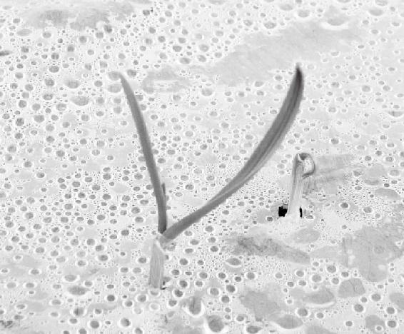
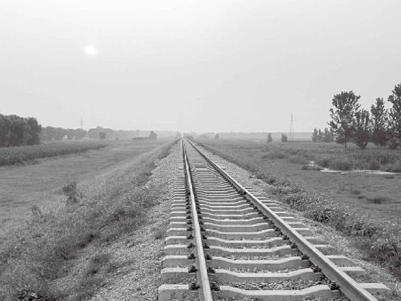
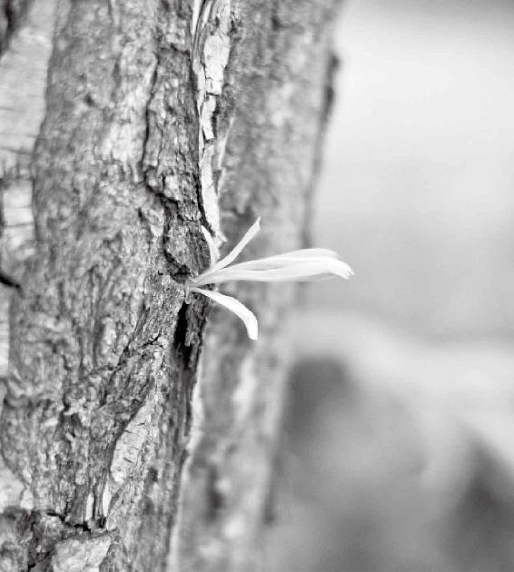
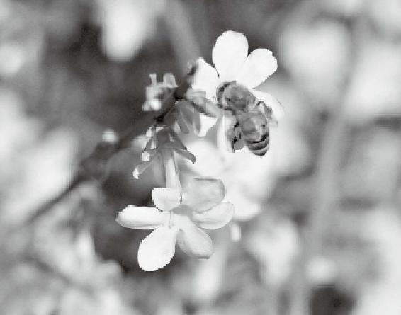
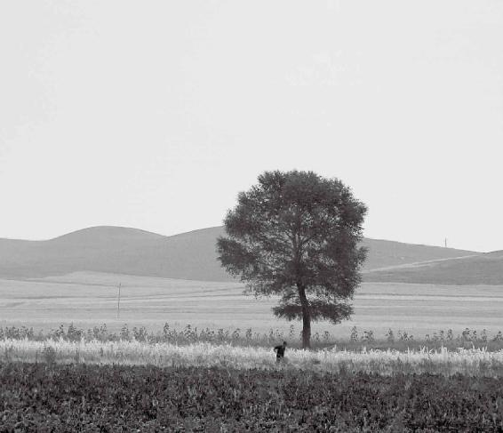
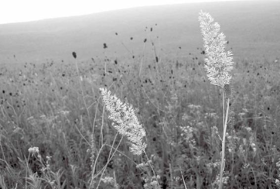
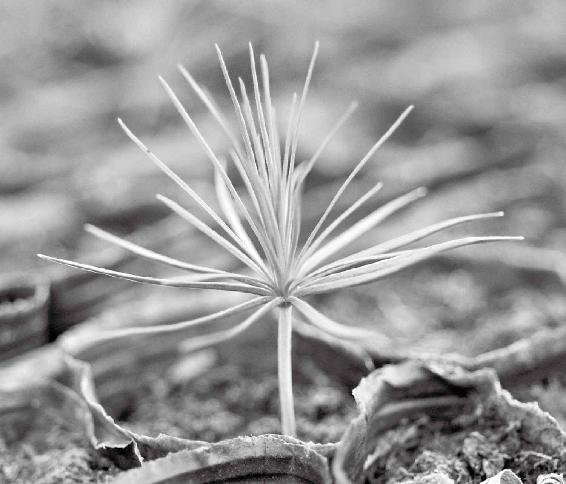

黄色是通脾的
口腔表现出来的问题与脾有关
脾里面的精包含物质能量和精神能量两种
人的脾胃有问题，会表现在舌头的主体上
甘甜的味道最容易被脾胃吸收、消化
与土地接触少了，人容易脾虚
脾胃虚的人，要多喝点牛肉汤
小米是最补人脾胃的
土星的变化会影响人的脾胃功能
脾胃有了问题，反映在外面就是肌肉有了病
奏起do调儿来，能让脾感到高兴
脾胃弱的人要多用“五”和“〇”的数
香的本意是五谷的香
经文：
中央黄色，入通于脾，开窍于口，藏精于脾，故病在舌本。其味甘，其类土。其畜牛。其榖稷（ji）。其应四时，上为镇星。是以知病之在肉也。其音宫。其数五。其臭香。
黄色是通脾的
梁冬： “中央黄色，入通于脾”作何解释？
徐文兵：前面讲过“取类比象”——中国哲学，或者中医是把这些杂七杂八的东西怎么归类的？不是看形状，不是看大小，而是看它背后的真相——也就是看其神韵，或者叫神气。对应到肉眼能看见的就是“黄色”——黄颜色的、位置处在中央的，是跟人的脾对应的关系。什么意思？
梁冬：是不是这个黄色，在波段上这一段，和我们脾的某些特征之间有某种关系呢？
徐文兵：黄色和脾的气是共振、共鸣的。前面我们讲过，“东方青色，入通于肝”——生发。碧的、绿的、蓝的都是青色。入肝经的那些中药，大多数是青色的。
黄色和脾的气是共振、共鸣的。
举个简单的例子：我们经常用的麻黄没摘下来时——炮制之前它就是青绿的。以麻黄为主的方子叫“麻黄汤”。在《汤液经法》里边，“麻黄汤”是真正的“小青龙汤”，它入肝经、鼓舞肝气，肝气一冲动，出一身冷汗，体内的寒气就被逼走了。所以，很多青绿色的药，比如青皮，色青、入肝经、味清淡，是解肝经热毒的；还有青蒿，可以调治疟疾。
“往来寒热”，属少阳证，“少阳之为病，寒热往来，胸胁苦满，心烦喜呕”，这个青色就对应进去了。
前面我们还讲过，红色、赤色、赭、紫，这些颜色都入心。在中药里边，很多活血化瘀的药都是红色的。比如，赤芍、丹参、茜草等。大家都知道：茜草原来是染衣服的染料。西方工业革命中，因为采用人工合成的茜草素，免去了从植物中提取的工序，极大地提高了工作效率。另外，还有红景天。去西藏的人，为了避免高原反应引发的心脑血管疾病，都要提前熬点红景天吃。还有代赭石、紫草，都是红色的。
去西藏的人，为了避免高原反应引发的心脑血管疾病，都要提前熬点红景天吃。
黄色的东西能调动脾的消化吸收功能
徐文兵：接下来，我们讲“黄色”，“黄色入脾”。
梁冬：它叫“中央黄色”。
徐文兵：什么叫“中”，什么叫“央”？中就是中间，middle或者central。在中间居于高处的叫“央”。我们经常说“夜未央”，就是夜没到那个极点、极黑的状态。比如说，中央警卫局的警卫员，他在“中”，但不在“央”、不在权力最高层。前面讲过，肝病是对应颈项的。颈椎病、强脖子、杠头都是肝病。脾在中央，“俞在脊”——脊梁的“脊”，脊梁在中；胸椎、腰椎，在高处。它又在“中”，又在“央”，对应的就是脾。
梁冬：人的身体，就是一个大地，也是互相比类的——你趴在那儿，你的脊柱就是最高的地方，就是“中央”。
人的身体，就是一个大地，也是互相比类的——你趴在那儿，你的脊柱就是最高的地方，就是“中央”。
徐文兵：又是“中”，又是“央”。所以，脾吸收不好，小孩子面黄肌瘦的——疳积、食积，跟非洲小难民似的，怎么办？捏脊，提后背的最高处，就能促进脾的消化。
《黄帝内经》说 “毒药攻邪”，就是说，身上有邪气的人要用有毒的药。身上没有邪气，就不要整天乱吃药——是药三分毒。
那么，正常人平时吃什么呢？“五谷为养”。植物的种子最容易消化吸收。或者说，在耗损自身能量最少的基础上，最好的食物就是“五谷”——植物。但“五谷”里面也有各种颜色，相比之下，容易被脾吸收的是黄色的粟。
在耗损自身能量最少的基础上，最好的食物就是“五谷”——植物。但“五谷”里面也有各种颜色，相比之下，容易被脾吸收的是黄色的粟。
“沧海一粟”就是指小米，最容易消化吸收。我们经常说，“小米加步枪，打败了全副美械装备的国民党军。”小米是最好的粮食，比牛肉罐头要厉害得多。
黄色的东西能调动人脾的消化吸收功能。意思就是说，如果你的脾胃消化功能不好，或者吸收功能不好的话，就应该穿黄色衣服，家里装修应该刷黄墙。
梁冬：讲到“中央黄色”。我有个问题，“黄帝”有两个写法，有人说是黄色的“黄”，有人说是“三皇五帝”的“皇”。
徐文兵：我们讲的是《黄帝内经》，是黄色的“黄”。
梁冬：有什么讲究吗？
徐文兵：当然有讲究。黄帝之前那个神农氏，叫炎帝。他在南方起家，南方属火，红色，火生土。炎帝之后是黄帝，黄帝在中原发家。理论上来说，黄帝之后应该是西方有人起来了，土生金嘛。事实上，没有这么机械。我是简单介绍一下他们的来历。
神农叫炎帝，也叫赤帝。他是南方起家，代表长江流域的文明。黄帝出生在轩辕丘，有人考证在新郑——河南郑州；有人考证在黄河流域，在陕西或者山西这一带。但是他代表的是一种黄河流域的文明，所以他叫黄帝。这是历史上讲的“三皇五帝”。
梁冬：“中央黄色，入通于脾……”说到这个地方，我听说有一些中医诊所会把他的诊室分成几种不同的颜色。不同的病人来了，在不同的诊室里边治病，真是讲究。
徐文兵：这就是说，我们中医复兴以后，那些古老的文明——那些仪式、那些规矩，都会慢慢地恢复。不像现在有的人，像卖菜似的，敞着个领子叼根烟，人一来就看病，不管在哪儿。我有时候出去讲课，或者到电台录节目、做节目，有些人一伸胳膊便叫我号脉。
我说：“您能不能约个时间？”您把您当回事儿，也把我当回事儿，咱们正正经经地讲个时间、氛围、地点、场合，然后认认真真地看病。这叫讲究。
您把您当回事儿，也把我当回事儿，咱们正正经经地讲个时间、氛围、地点、场合，然后认认真真地看病。这叫讲究。
梁冬：这就是“礼”嘛！
徐文兵：人的很多虔诚、敬畏之心都是通过这些仪式培养出来的。现在，好多东西都被革命了，都被打破了、遗忘了。
皇帝为什么选黄色的衣服
徐文兵：以前的皇帝为什么选黄色的衣服？清朝有八旗，有正黄旗，有镶黄旗，为什么将黄色作为最珍贵的？在古代，中国的思想认为居中的、掌握权力的人，是可以统驭四方的，再加个夹角，就是统驭八方的。所以，皇帝用的黄色是其他人都不许用的。
梁冬：在中国古代的时候，不同的朝代有不同的主色调，对吗？
徐文兵：秦朝是以黑色为主。从秦朝的治国历史来讲，它属于一种 “法家治国”“酷吏治国”，偏于暴政。但是，秦朝只存续了十几年。我去秦始皇陵参观的时候，导游说这里的风水多么多么好——脚踏什么河，背靠什么山，左青龙，右白虎……我说，风水选这么好，怎么秦始皇的儿子扶苏被杀了，最后子婴又被杀了。这风水选得好吗？天时不如地利，地利不如人和。搞暴政、失去民心的话，埋到哪儿也得完蛋。
秦朝的制度，我是不大认同的。我很敬佩汉朝初期那种“休生养息，无为而治”的制度。《黄帝内经》成书，也是在汉代初年。经过一次大动乱以后，靠口传心授——把过去老师传授的东西记在心里的这些人们，才安静下来，把宝贵的经验写成书。没有一个“休生养息”的年代，恐怕我们现在读不到《黄帝内经》。
没有一个“休生养息”的年代，恐怕我们现在读不到《黄帝内经》。
梁冬：其实，历史总是环环相扣的。
中医里非常好的健脾药都是黄色的
徐文兵：前面，我说了食物——小米粥，《伤寒论》说了，喝完“桂枝汤”后，吃碗小米粥，这叫糜粥——“啜热稀粥一升余，以助药力”，然后说，这个人得病以后，“糜粥自养”，不要吃肉，免得 “热遗食复”。
很多人病了以后，就想吃点清淡的、爽口的、容易消化的食物，这时候熬点粥，或者做碗面条，都挺好。另外，中医用的非常好的健脾药，让脾的吸收功能增强、让人变得强壮的药都是黄色的。
很多人病了以后，就想吃点清淡的、爽口的、容易消化的食物，这时候熬点粥，或者做碗面条，都挺好。
比如，黄芪。黄土高原上的黄芪是最好的。山西北面浑源县出的黄芪叫“北芪”，也叫“箭芪”，那儿的黄芪效果最好。黄芪补脾胃，升血压，甚至可以调治胃下垂或者臟器脱垂，效果特别好。
然而，现在为了提高产量，有人搞了一种“速生黄芪”，一年就能长成（其实三年以上才能用）。就和现在吃的鸡肉一样，鸡几十天就出栏了，其肉嚼起来跟柴禾一样。
古书上记载，原来这个黄芪，开一两——30克，就是大量了，怕将人的血压升太高、怕气提得太强；现在开30克，泥牛入海无消息——没一点儿反应，开60克，还没反应。最后，开100多克，才有那么点儿效果。因为现在的药材质量下降了。
中医有一剂汤叫“补中益气汤”。补中益气丸，里面主要的药就是黄芪。另外一味特别好的补脾胃的药，叫党参，它是黄色的、发甜的。为什么叫“党参”呢？因为它是山西长治的上党地区出的 “参”。
《伤寒论》里边，经常会用到人参。比如理中丸，需要人参多少两，然后是白术、干姜、炙甘草，当然，人参不是我们现在吃的东北人参、吉林参、高丽参，绝对不是。
《伤寒论》里边的人参，都是党参，味道是甜的。
现在我们读《伤寒论》，一开人参就用红参、高丽参，或者生晒参，其实是错的。在三国时代——张仲景生活的那个年代，那会儿的辽东跟中原是没啥关系的，那地方不属中原地区统治。所以，《伤寒论》里边的人参，都是党参，味道是甜的。如果现在用《伤寒论》的经方开一个桂枝加人参汤，里面用东北人参，就错了。
真正的人参味道是苦的
徐文兵：真正的人参味道是苦的，是入肾、补肾的。
真正的人参味道是苦的，是入肾、补肾的。
赵本山主演过一部电视剧《刘老根》。里边有个著名的人物叫“药匣子”，范伟演的。这个药匣子本名叫李宝库，是专门研究山上那些花花草草的，然后给刘老根的旅馆配药膳。他给刘老根介绍药膳配方时说到用了人参，人参有什么用？上来就背。
中药有个《药性歌括四百味》，我小时候背过，第一味药就是人参。在《刘老根》里，李宝库是这么说的：“人参味甘，大补元气，止渴生津，调营养卫”。营是营长的“营”，是我们血管里流动的那个气；而“卫”是保护我们身体表面的，是保卫的“卫”。这四句话，很好记——这是明朝一位姓龚的医家写的。
“人参味甘，大补元气，止渴生津，调营养卫”。
他背完以后，刘老根问了一句：“人参是甜的呀？我怎么一直尝的是苦的呀？”一看这儿，我说，“赵本山尝过人参，李宝库背的是党参”——你千万别用错药了！

物尽其用才是大智慧。
元气快漏的时候去补漏，叫“大补元气”
梁冬：一般我们说的人参，到底指的是党参，还是东北的人参呢？
徐文兵：这要看你干什么。如果补脾胃的话，就用党参。党参的味道是甜的，颜色发黄。党参长的那样子，也像个人样，但是不像人参那么像人。人参为什么大补元气呀？
梁冬：我以前以为补就是加的意思。
徐文兵：那叫益，很多人认错字了——好像说，吃人参就能让自己的元气增加得多、然后就活得长。Add something，其实不对，它是止损的。当你的元气快完了，就是快漏的时候，吃人参就能补住漏，这叫“大补元气”，防止流失。所以，我们抢救危重病人的时候，会发现他们出现脱气、脱液、脱汗、脱血、脱精的情况，这都是在漏元气。这时，就可以熬上人参，然后抢救。像李可老先生抢救危重症的时候，最善用人参。
补脾胃之气——后天之气时要用党参；真正要救命的时候，要用人参。但是，现在的人参都是人工栽培种植的，真正那种野山参的价格比黄金都贵！
补脾胃之气——后天之气时要用党参。真正要救命的时候，要用人参。
梁冬：如果有一天，你发现到餐厅里边可以吃“人参炒牛肉”的话，一定不要觉得诧异。
徐文兵：那人参就是萝卜！
口腔表现出来的问题与脾有关
梁冬： “中央黄色，入通于脾”。这个脾，实际上指的不仅仅是脾臟，对不对？
徐文兵：指的是以脾为代表的一系列：脾对应的是胃，然后，脾又主肌肉。下面又说，脾 “开窍于口”。
梁冬： “开窍于口”，这个“口”到底是指什么？是唇呢，还是口腔内部呢？
徐文兵：口腔内部。也包括一部分唇。我讲过，人的任脉从小肚子起来以后，环绕口唇，所以口唇的颜色很性感，口唇的颜色也代表一个人的生育功能，这是经脉上的联系。但是口腔内部，这些口腔唾液的分泌，都跟脾有直接的关系。
人的任脉从小肚子起来以后，环绕口唇，所以口唇的颜色很性感，口唇的颜色也代表一个人的生育功能。
梁冬：有些人如果口腔内壁溃疡，是不是胃或者是脾胃之间有什么问题呢？
徐文兵：肯定是火，但要判断一下是虚火还是实火？
梁冬：怎么判断呢？
徐文兵：有些人口腔起溃疡，吃一顿辣椒就好了。这说明这人吃了凉东西积往了，然后那个火就浮到表面了，一吃辣椒开胃了，火下去了，就好了。
但有些人的口腔溃疡是处于一种湿气加上热气的状态，是反复不好的那种口腔溃疡，一般都是吸收了太多的湿毒。“富营养化”的东西太多了，治疗时就要袪湿气。所以，口腔表现出来的问题要归究到脾。
小孩长鹅口疮，是感染了一种真菌，还有些人总喜欢咬自己的嘴唇，或者舌头。这就是肿了——湿气、水湿太过了。
梁冬：所以，咬到自己的嘴并不是偶然现象。
徐文兵：不是因为他想吃肉了，是因为他吃肉吃太多了！
梁冬：天底下没有偶然，只有必然！
徐文兵：我们给一个人看病，望、闻、问、切的时候，要看他口唇的厚薄。口唇厚的人，一般肌肉比较丰满；口唇薄的人，一般肌肉比较消瘦，这代表他的脾胃的功能。
口唇厚的人，一般肌肉比较丰满；口唇薄的人，一般肌肉比较消瘦，这代表他的脾胃的功能。
梁冬：我发现有些人的面相是在变的：年轻的时候，口唇是比较厚的；老了以后，开始变得很薄了。
徐文兵：有些人是年轻的时候比较憨厚，拙嘴笨舌的。到老了以后，变得伶牙利齿了。树没水叫“枯”，人没水，就很难 “活”了。
徐文兵： “开窍于口”是一个唾液的问题。有些人吃饭，吃一口饭，喝一口汤，口腔里边没有唾液。
要知道，所有的水液，责之于肾，但是到了口腔又有一个分管的问题——脾的问题，这是一种表现，就是说脾胃的阴血，或者阴液不太足；还有一种人说话痰声不断，或者唾沫星子乱蹦，睡觉时嘴角上全是口水。说话激动了，口水能跑到别人身上。睡觉的时候流口水、湿枕头——唾液过多。这都是脾的问题。
古人的智慧在于，他能把这些貌似没有关系的东西总结出一种规律来，让你很容易地找出它们之间的内在联系。
梁冬：那个活着的“活”，是三点水加一个舌头的“舌”。这个“活”字怎么解释呢？
徐文兵：如果一个人口干舌燥，口中没水，就说明他的津液生化得不太足了。树没水叫“枯”，一个人要是没水，就很难 “活”了。所以，调治这种干燥综合症，要看看是局部问题，还是全身问题。比如说，仅仅是嘴干，可以说“责之于脾胃”。如果这人嘴干、眼干，鼻子也干，或者是生殖器官也干，就说明根儿上有问题，根在肾精了。所以，需要辨证论治。
梁冬：碰到干燥的这个问题，要去看看，到底是局部的干燥，还是全身的干燥。前两天碰到一位朋友，他说他的眼睛很干燥，那通常是什么问题呢？
徐文兵：眼睛干燥，首先是肝的问题。肝血不足或者肝的阴液不能上乘。如果程度较轻的话，我们一般在眼睛周围的几个穴位扎一下针：眉毛开头，这叫攒竹穴。眼角，就是眼的外眦，这叫童子髎，是胆经的穴。有的时候，我们会扎一下睛明穴，在眼睛的内角，这是膀胱经的第一个穴。
眼睛干燥，首先是肝的问题。肝血不足或者肝的阴液不能上乘。
梁冬：挤按睛明穴，做眼保健操嘛！
徐文兵：用针刺的话，力量更强、程度更深。程度轻的人，马上眼睛就能得到缓解。第二个方法，如果眼睛干，我们说“金能生水”。也就是说，肺有一种推动人的体液，分布到各个部位的功能，肺能帮助肾去运化水液。人打个哈欠以后，眼睛会湿湿的、润润的，这叫“金生水”。这些小办法都能缓解。
如果这些招儿不管用，那就要从根上找问题了。肝的妈妈是肾（木的妈妈是水），你又得补肾了。平常的中药店里有 “杞菊地黄丸”——杞是枸杞的“杞”，菊是菊花的“菊”，里面有地黄，这些都是帮助你滋润眼睛的。
但是，“能挣的不如会花的”，你老人家整天盯在那儿打游戏、看股票，然后熬着夜、通着宵，你那儿漏着，大夫再怎么给你补，还是没用！真正养阴就是借天地之力量，晚上早睡，秋冬收藏。
真正养阴就是借天地之力量，晚上早睡，秋冬收藏。
脾里面的精包含物质能量和精神能量两种
梁冬：“藏精于脾”是什么意思呢？
徐文兵：“藏精于脾”，就是说脾的那个臟，负责给脾的系统提供所有的能量基础，是这一系统的能量基地、物质基础。
“藏精于脾”，就是说脾的那个臟，负责给脾的系统提供所有的能量基础，是这一系统的能量基地、物质基础。
很多人经常跟我说，“我的脾切了，我不也活得好好的吗？”问这个问题的人，犯了两个错误：第一，他简单地把解剖学中有形的物质器官和我们中医的脾的概念混淆了。意思就是，我这儿有个“心”，身体上就必须对应一个“心”。我的脾切了，脾的系统就崩溃了。
其实，人不光是有一个肉身，有一个肉质的器官，它还有背后的东西，背后的东西负责推动器官工作。神经是血管在支撑它，谁又支撑这些神经、血管呢？肯定是我们中枢的某个区域在控制——现在几点了，我要给脾供血了，那信号就过去了。没有那个肉质的臟，是不是说，就不给它供血了？你伤了它的物质的、有形的东西，就等于伤了它背后的无形的东西吗？
梁冬：《西藏生死书》里面讲到一个叫“幽灵通”的东西，他说有一些人做了截肢手术。晚上，你在做梦，甚至能真实地感觉到那个被截掉的手的疼痛。
徐文兵：不用做梦，白天就有感觉。这不是西藏人说的，现在医学上就有这种病，名字就叫幻肢痛。幻是幻想的“幻”，肢是肢体的“肢”。一个人本来截肢了，比如说胳膊没了，他却能明确地告诉大夫，“我左大拇指疼。”
这种情况下，医生要扎哪儿，怎么治？况且人有代偿功能，当人的眼睛瞎了以后，他的嗅觉、听觉会变得更敏锐——这个臟腑不能工作了，但其他有代偿。所以，就像你刚才举这个例子，我把手切了、截了，但是指挥手的那一套工作的东西还在、那个神还在!
脾是藏精的，不见得你切了它，你的精就没了。切了脾，不等于把脾所有的东西都切了。
脾是藏精的，不见得你切了它，你的精就没了。切了脾，不等于把脾所有的东西都切了。

看一个东西不要只看表面，要意识到其背后无形东西的存在。
人的脾胃有问题，会表现在舌头的主体上
梁冬：人的脾胃出现了问题，表现在哪儿呢？“舌本”。
徐文兵：“舌本”是哪儿？树根和树本，是不一样的。树根是地底下那部分。树本是树桩子，树干。很多人以为根本就是“根”，这是不对的。同理，我们的舌头有舌根儿，这个舌根儿是属肾的，而舌的主体是属脾的。
梁冬： “久久鸭”的鸭脖还有鸭舌头呢！那个舌分为两段，还有一个根儿连在后面的。那个叫“舌根”，有肉的是“舌本”。
徐文兵：舌本是那个主根、主干，舌尖是属心的，舌的两边是属肝胆的。
梁冬：所以，法兰西式接吻，两个舌尖一打架，肯定就是心动了。
徐文兵：有的人说，舌尖和舌头的两边能分别感知不同的味道，品葡萄酒时要把舌头一卷，让酒在舌头上滚动，让心充分感知酒的味道。
“舌本”是舌的主体。当脾胃有问题的时候，就会在舌头的主体——主干上出现。最大的问题就是胖大舌。伸出来一看舌头是肿的，水汪汪的大舌头，两边还有两排牙齿印儿。
“舌本”是舌的主体。当脾胃有问题的时候，就会在舌头的主体——主干上出现。最大的问题就是胖大舌。
对一个正常人来说，老天给你配的舌头正好跟唇齿相依，井水不犯河水，牙咬不着你。如果脾胃里边湿气大，食积太重了，舌头就肿了。肿了以后，你把牙一合，就咬着舌头了。然后，中医舌诊时会看到舌苔。
有好多人早上起来一照镜子，舌头上边有厚厚的一层舌苔。有些人就刮，刮完了以后，“野火烧不尽，春风吹又生”——有本事伸到肚里去刮一刮。
舌头上的问题只是内因的外在表现。内在的原因是脾富营养化，吸收了太多不该吸收的东西。
梁冬：通常内心不安定的人，伸出来的舌头也是颤的。
徐文兵：看舌头要看几方面：第一看舌头的颜色，第二看舌头的大小。要看“形”，要看“色”，还要看“态”，就是看它怎么动。
看舌头要看几方面：第一看舌头的颜色，第二看舌头的大小。要看“形”，要看“色”，还要看“态”，就是看它怎么动。
一般人都认为狗伸出舌头在那儿哈哈颤，其实人伸出舌头来也一样。像很多内心不安定的人，伸出舌头也是颤的，这是在散心火。
很多内心不安定的人，伸出舌头也是颤的，这是在散心火。
还有，多动症的小孩有个特点叫“弄舌”。他没事儿就在那儿吐舌头，就跟蛇吐信子一样。其实，这就是心里面的毒火太重了，比如吃鸡肉太多了……
有时候，舌诊时还要看一下舌底下边的静脉血管，是不是那种怒胀的、紫色的。舌头下边还有两个“经外奇穴”，一个叫“金津”，金是金子的“金”，津是天津的“津”；另外一个叫“玉液”。我们调治没有唾液的症状，或者是精神方面的问题，就扎这儿。
梁冬：你真的在舌头上扎过针啊？
徐文兵：我真扎过。我怕病人咬我，得先拿一个架子把他的牙齿给撑起来。
老吃口香糖，就是自己在伤自己
梁冬：还有一个问题，有些人喜欢吃口香糖。小时候我老吃口香糖，我妈叫我别吃。她说，老吃口香糖会伤津液。为什么呢？
徐文兵：我特别反感人嚼口香糖，首先不礼貌。中国人吃饭是件很庄重、很庄严的事情。有些人却没事儿老在那儿嚼口香糖，腮帮子一鼓一鼓的。这是从美国流传来的文化，很多人盲目跟风。这会引发两个问题，第一个，会得一种病叫“下颌关节紊乱”。下颌关节就是我们的“咬肌”，上面有个穴位叫“颊车”，得了这种病后，咬比较大的东西时就会卡住。
我见过一个病人，他对我说：“徐大夫，我又卡住了。”他在吃一颗大葡萄的时候，一张嘴“咔”，下颌关节合不上了。
这种紊乱是怎么造成的？因为他老这么嚼东西，不给下颌休息时间。我们一天吃三顿饭，该干活干活、该休息休息，他却整天不断地嚼着食物。
还有一种问题，就是胃有病的人嚼不动食物。有位老太太是个经络敏感的人，她没学过医，但我给她扎针时，针尖往哪儿走，气感怎么走，她能描绘得清清楚楚。她跟我说，当她犯胃病的时候，就觉得腮帮子——颊车穴这儿酸。颊车穴是胃经的第六个穴，嚼不动东西就是这块儿气不足。所以，老嚼口香糖，我认为就是自己在伤自己。
颊车穴是胃经的第六个穴，嚼不动东西就是这块儿气不足。
刷牙不当会伤胃
徐文兵：现在的牙膏和口香糖，我总是怀疑它们有破坏胃粘膜的作用。牙膏有清洁作用，但是，刷牙时怎么能保证你不会吞下一两口牙膏到胃里呢？事实上，不少人漱口的时候一不小心，“咕咚”一口，就会把牙膏吞入胃里。
我研究胃病时，突然发现，胃病都跟刷牙有关系。
梁冬：因为很多人把牙膏吃到了肚子里，所以才得病。
徐文兵：得了胃病——没清洁牙，清洁了自个儿的胃粘膜了。另外，口香糖里面有橡胶，还有什么甜味剂、防腐剂。防腐剂会不会伤到你的胃呢？
我建议大家，一定要学做贵族，吃东西的时候就要安安静静地。我看好多人，一边走，一边吃着东西；一边干活，一边吃东西，这其实都是在伤神。吃饭，就要正正经经地吃饭，全神贯注。这个东西怎么做的？怎么吃更好？怎么吃更香？要认真，这都是大事儿。现在有很多人，活着不知道为什么？吃不好，睡不好，还在那儿拼命工作。
我建议大家，一定要学做贵族，吃东西的时候就要安安静静地。我看好多人，一边走，一边吃着东西；一边干活，一边吃东西，这其实都是在伤神。
嗅觉、味觉不灵，问题也出在脾
梁冬：讲到这个舌头的问题，还有一些人喜欢在舌头上打舌钉儿——搞一个高级一点的钉儿，然后在上面镶个钻石。
徐文兵：这都是一种自残、自虐、不健康的行为。我都是反对的。我看到很多人，喜欢打耳朵眼儿，打一眼儿不够，还要打一排，简直是自虐！
自虐的人有他背后的心理问题，也有生理的问题。我发现，好多人失去了嗅觉，有的人失去了味觉，问题也出在脾。食不甘味，味同嚼蜡，吃什么东西都是一个味。这样活着还有意思吗？所以，一定要注意保护我们的舌头，不要受特别辛辣的，或者是寒热的刺激。
舌头上不是有味蕾吗？什么叫味蕾呀？不就是一些活跃的小细胞吗？你先一道冰，然后，再来一道热水，一道辛辣的食物，冰火两重天，最后都会伤到胃。还有一个要告诉大家，那些真正会保护舌头的人都是品酒师。
梁冬：有一些牙刷带有刷舌苔的刷子，这种东西好不好呢？
徐文兵：表面上刮一刮也对，有本事伸到肚子里刷去。真正地去根，就要吃芳香、化湿、消食、化积的药物。舌头只是给你一个信号，里面多余的东西太多。
真正地去根，就要吃芳香、化湿、消食、化积的药物。舌头只是给你一个信号，里面多余的东西太多。
现在很多喜欢自残、自虐，而不自知。
甘甜的味道最容易被脾胃吸收、消化
真正养人的味道是——甘淡
梁冬：“其味甘”是什么意思呢？
徐文兵：“其味甘”的意思就是说，甘甜的味道最容易被脾胃吸收、消化。同时，多吃甘甜的味道，也能增强脾胃的功能。
甘甜的味道最容易被脾胃吸收、消化。同时，多吃甘甜的味道，也能增强脾胃的功能。
“甘”还包括一种味道叫“淡”。“嚼得菜根，百事可为”，什么叫“嚼得菜根”？一般人吃饭都要加点辛辣、刺激、咸鲜、美味的东西，但是 “五色令人盲”，这种五味滋味过厚，我们称它为“甘脆肥浓，腐肠之药”。你吃这么多东西，味道这么重，说明你脾胃的消化吸收功能差了，要加重滋味，以寻找刺激。就跟一个男人性能力不强，非要吃春药一样。
真正脾胃功能强的人，能在甘淡的饮食当中品出滋味来。
真正脾胃功能强的人，能在甘淡的饮食当中品出滋味来。
我们现在把吃菜当吃饭。但真正意义上的“吃饭”就是一碗小米饭，干饭或者白米饭，可以不炒菜，直接拌点酱油汤，拌点豆豉，都能下饭，而且可以吃得津津有味。
我们现在是多吃大鱼大肉，不爱吃主食，颠倒了！如果你有一副好的肠胃，就能从一些很薄的滋味里面，或者别人吃起来都没什么味道的东西里面品出滋味来。这时候你再吃饭，别人看你很将就，其实恰好说明你的消化吸收能力非常好。
脾胃有病的人吃饭则必须得弄点辣的，没辣的就吃不下，感觉没胃口。这就跟吃了春药去干活一样。所以，真正的味道，真正养人的味道是——甘淡。
外面餐馆的饭菜吃不完，打包回家后，第二天早晨起来尝一下，你发现根本咽不下去。因为味道太重了、太咸了！可是头天晚上吃，为什么不觉得？那会儿你在一种油和腻的状态下，必须靠这些东西来刺激肠胃，可当你睡了一觉，平和之后才知道，自己怎么吃了味道这么重的东西！
吃“陈仓米”可以节省元气
徐文兵：经常在家吃饭的人会健康长寿。因为常吃甘淡、平淡的食物，能省自己的元气。人吃饭就是拿自己的元气去化谷气，与其吃那么多没用的东西，还不如吃得适量一些。
经常在家吃饭的人会健康长寿。因为常吃甘淡、平淡的食物，能省自己的元气。
古代有一种养人的饭叫“陈仓米”（放置很多年的米）。火力旺、有劲的人可以吃新米。可有些人脾胃弱，吃了新米以后受不了，就要吃“陈仓米”。 “陈仓米”被风化了，或者是蛋白质消解了。它的味道特别甘淡，对脾胃有毛病的人很好。刚刚大病初愈的人，熬上一点陈仓米喝，慢慢就恢复了。
“不得其酱不食”
梁冬：韩国料理和日本料理都有一种酱，有一些潮州菜里边也有，这种酱，就是葱蘸的酱。但是汉人吃饭的时候很少吃。为什么呢？
徐文兵：东北有呀！孔子讲过 “不得其酱不食”。
梁冬：这个“酱”是怎么来的呢？
徐文兵：通过发酵制作出来的。酱通过微生物发酵，或利用自身的酶发酵以后，能够帮助我们分解动物和植物蛋白，能够节省元气。为什么那么多人喜欢吃臭豆腐？为什么好多韩国人和日本人都喜欢吃纳豆，我们闻一下都觉得受不了，人家却吃得津津有味。
为什么？他们身体里面的神需要！身体本能需要它。
纳豆的好不是靠科学研究发现的，而是依靠人的本能，发现这个东西变成这样以后，尽管闻着不好闻，但吃进去以后，“化”的功能提高了！
甜东西吃多了会伤肾
梁冬：“消”和“化”有什么区分呢？
徐文兵：消是物理变化，一块大猪肉嚼成小块猪肉，最后变成了乳糜状的，但它还是猪肉。化是经过你的酶，将猪肉、蛋白质分解成氨基酸，氨基酸再重新组合变成人肉。很多人不健康，其实是不消化导致的。有人是消不良，有人是化不良——消是胃的问题，化是小肠和三的问题。
根据中医的理论，“物无美恶，过则为灾”，吃甜的、甘淡的东西对脾胃好，那我就吃甜的，最终吃了个啥结果？
“物无美恶，过则为灾”，小孩子吃糖多了就会有龋齿，其实就是把肾伤了。
梁冬：土克水，多吃甜的东西，估计对肾不好。
徐文兵：首先表现在牙不好，“牙为肾之余”，肾主骨、生髓，牙是骨之余。所以，小孩子吃糖多了就会有龋齿，其实就是把肾伤了。
有个成语叫“囫囵吞枣”，什么意思？枣是补脾胃的，枣是甜的——“大红枣儿甜又香”，但是，吃甜多了会伤肾。
有个哥们儿很聪明，他说——那我就不拿牙咬它了，直接吞进去。他这种思路是对的，因为他知道吃甜多对肾不好。但是他以为不经牙咬就不接触牙了——其实，经过脾胃吸收消化以后，体内血糖增高，照样会伤肾。
大家记住，吃甜的多了就会伤肾。第一个表现，吃甜多了以后，小便就哗哗哗的，肾固不住水，闭藏功能不行了。如果女的吃甜的多了，白带就会异常增多。有人说，这是真菌感染、霉菌感染，其实那是湿气！就是说营养的东西太多了，要从那儿往出走。还有的女性会变得肥胖，肥胖就会导致闭经，不来例假了。男人吃甜过多则是阴囊周围出现粘汗，有的人阴囊周围会出现湿疹。
吃甜的多了就会伤肾。第一个表现，吃甜多了以后，小便就哗哗哗的，肾固不住水，闭藏功能不行了。如果女的吃甜的多了，白带就会异常增多。
我看到很多人在那儿坐着，一会儿揉揉这儿，一会儿动一动腿，很可能是裆下有湿。所以，甜的东西吃多了，对脾胃好，但对肾不好，对生殖功能也不好。
老百姓有句俗话说“母鸡肥了不下蛋”——吃胖了以后它就不排卵了。因为肾主生殖，吃甜的东西就抑制了它这种功能。另外，母乳喂养期间也是如此，当母亲去生产甘甜的乳汁的时候，是没有月经的。当她一回奶，停止给孩子哺乳了，月经就来了。
肾主生殖，吃甜的东西就抑制了它这种功能。
梁冬：土是克水的，木是克土的，但如果土更强的话，会不会反侮其木呢?
徐文兵：那就更复杂了，我们只说一个最基本的关系。土不足，正好肾水还挺足，我们可以给他补。补到一定程度，就不吃了。我很反感有些大夫一开药就是半年或者一年。你要看自己开的药有效还是没效。有效，那病人的症状就变了，再吃你的药就不对了；如果没效，多吃半年的药干嘛呀！
所以大家一定要尊贵点儿，找大夫去看，望、闻、问、切，开出一副适合自己的药，顶多吃上三五个星期，然后就停药、换药。
“胃不和则卧不安”
梁冬：如果要捏一个穴位，或者是敲一敲胆经、带脉，做哪一个动作，是有助于脾的健康的？
徐文兵：脾有多个穴位，最有代表性的就是脾经上的“太白穴”。太白穴就是我们经常出现痛风的地方，在大脚趾的内侧，那个褶子关节的后面。太白穴后面有个穴位叫“公孙”。这两个穴位在足底按摩的时候，一个代表人的甲状腺，另外一个代表人的胃。按摩这两个地方，能够促进人脾胃的消化和吸收。特别是公孙穴。
按照“五行”的观念，无论是气味、颜色、方位、时间、动物、五臟，其实都可以归入所谓的五行系统。
梁冬：有些人吃些东西肚子就觉得特别胀，是不是脾胃能力不强？
徐文兵：那就是胃的问题。
梁冬：胃胀了之后会不会睡不着觉？
徐文兵：会，“胃不和则卧不安。”
麻辣鲜咸的东西吃多了耗元气
梁冬：按照“五行”的观念，无论是气味、颜色、方位、时间、动物、五臟，其实都可以归入所谓的五行系统。那么，“其味甘”的“甘”请再解释一下。
徐文兵：“甘”是甜的意思。还有一个意思，就是“淡”——没有味道的那个味道。
梁冬：“淡出鸟来”。
徐文兵：这个是《水浒传》里边的一句话。好汉们经常大块儿吃肉，大碗儿喝酒。几天不这么吃，嘴里就会“淡出个鸟来”……嘴里没味。
我们喝的水是淡水，有的人也管它叫甜水。有些地方的水是苦涩的，不能喝。而能喝的水井我们管它叫甜水井，不能喝的水井叫咸水井、枯水井。另外，淡水的味道也是归到脾里边的。
现在流行一句话叫“平平淡淡才是真”。如果饮食里面麻辣鲜咸的东西太多了，想过一种平平淡淡的生活，就过不了。因为这些物质，或者这些气、这些信息，会在你的肚子里边闹腾。
真正想过平淡生活的人，是很容易满足的，只吃甘淡的食物。古人讲“嚼得菜根”，菜根没什么味道，但如果你吃菜根的时候，能甘之如饴，觉得能吃出味道来，就说明你的元气足。
如果你吃菜根的时候，能甘之如饴，觉得能吃出味道来，就说明你的元气足。
食物是谷气，我们的身体是用元气来化谷气的，把它们化成我们需要的营养和物质。如果一个人元气耗尽，给你再多的食物，你也吃不了。所以道家说，人这一辈子的吃饭是有定数的。不是说外面的食物有限，而是你身体一生中化食物的元气是有限的。你吃了很多不必要的东西、吃了很多难以消化的东西，就要多损耗元气，就会折寿。所以，吃得平淡一些、吃得少一些，不要吃太撑、太饱，元气就节约了下来，你就会活得长、活得好。
道家说，人这一辈子的吃饭是有定数的。不是说外面的食物有限，而是你身体一生中化食物的元气是有限的。
“甜”边儿上有个“舌头”什么意思
梁冬： “甘”和“甜”，有区别吗？
徐文兵： “甘”可以包括“淡”的味道。比如说，我们嚼一口馒头，刚吃进去是没味的，但待一会儿，就觉出 “甜”来了。
我们的唾液里边有唾液淀粉酶，能把淀粉多糖变成单糖，多糖是没有甜味的，单糖有甜味。由甘变成了甜，这就是“甘”和“甜”的区别。
“甜”就是在“甘”的旁边加了个“舌头”。你吃进去食物以后，经过了舌头的搅拌、唾液的分泌，把它“化”了一些， “化”成了容易消化和吸收的东西。
梁冬： “甜”边儿上有个“舌头”，就说明我们在吃饭的时候，多嚼几口，营养就可以更好地被消化吸收。
徐文兵：或者说，你更能体会到食物的滋味，有一种跟食物沟通的感觉。现在很多人吃东西都是“猪八戒吃人参果”，嚼都没嚼一口就吃进去了，还有人吃饭狼吞虎咽，吃饭特别快、特别急，不嚼就咽。有的人恨不得从嗓子眼里伸出手去碗里抓饭吃。这种人表现出来的不是消化问题，其实是一种“欲火”——欲火焚身，是他心情焦虑和急躁的外在流露。
现在很多人吃东西特别快、特别急，不嚼就咽。这种人表现出来的不是消化问题，其实是一种“欲火”——欲火焚身，是他心情焦虑和急躁的外在流露。
要长寿就得多吃苦、少吃甜
梁冬：饥和饿是不一样的，对吧？
徐文兵：饥是胃肠空了，饥肠辘辘，饿是主观感觉。这个人胃肠很空了，可他感觉自己不饿——“不想吃东西”；还有的人肚子里塞得满满的，但这个人可能感觉很饿，还想吃。这是不一样的。
甘是入脾胃经的。也就是说，甘甜的东西能够增强脾胃的功能，或者说增强土这个五行系统的功能。
前面讲过，身体有一个形，或者说有一个臟、腑强了以后，肯定有一个别的地方就会弱。吃甜的太多了以后谁会变弱？
梁冬：土克水！
徐文兵：水是什么？
梁冬：水就是肾。
徐文兵：肾、膀胱、牙齿、骨头这一系列都会变弱，甚至是头发的颜色也会变。因为肺主皮毛，中医认为头发长与不长是跟肺有关的，但头发的颜色取决于肾，所以说肾“其华在发”。
中医认为头发长与不长是跟肺有关的，但头发的颜色取决于肾，所以说肾“其华在发”。
你吃多了甜东西，对脾胃好，对肾却不好。很多小孩子喜欢吃甜食，吃到龋齿，掉牙了，豁牙漏嘴、牙齿发育不好。还有人淡水喝多了，最后伤肾了——喝完水以后人就不停地排尿。
肾有封藏的作用，但这些人却在漏，他们还引以为自豪地说“我在排毒呢”。其实他们不是在排毒，而是在流失自己宝贵的体液。 “甘甜甘温”（包括人们现在吃的一些补品、巧克力等）的东西吃得太多，就会削弱骨和髓，使人的骨骼和骨髓变得很弱。所以，如果你想长寿，要多吃苦、少吃甜。如果贪图一时之快，老吃那种甜，包括我们说的牛奶——牛奶尽管没有甜味，但它是一种甘淡的东西，甘淡的东西也会入脾。如果老喝牛奶，就会增强脾胃的营养，但最后会削弱肾的功能。
如果你想长寿，要多吃苦，少吃甜。
梁冬：按你的逻辑来讲，牛奶是伤骨骼的，而不是壮骨的？
徐文兵：牛奶是伤骨骼的。你可以跟踪一下最先进的科技报道，看看西方科学家现在对牛奶是怎么认识的。我不从科学角度说，而是从哲学角度讲，只能说牛奶是一种富含高营养的、味道甘淡的、有助于脾胃消化的饮料，但由此推论，喝多了是要伤肾的。
美国人分析为什么自己国家的糖尿病发病率这么高，他们认为跟这种饮食习惯有直接的关系。美国那些杂志封面广告都是些电影明星端一杯牛奶，刚喝完，嘴上留一个白圈叫牛奶胡子，然后有一句广告词，Do you milk?你喝牛奶了么？这是美国牛奶产业协会的广告，并不是一种科学的或者严谨的健康认识，这是为了卖它的牛奶，它会制造出很多东西来推销他的牛奶。
美国人分析为什么自己国家的糖尿病发病率这么高，他们认为跟这种饮食习惯有直接的关系。
中国人认为，牛奶是给孩子喝的，是调治一些非常严重的、虚弱的、脾胃的阴虚症的。正常人不适宜天天把牛奶当水一样地喝，这种甘的东西摄入太多，伤的就是肾。
梁冬：从中医的角度来看，牛奶不一定是补骨骼的，甚至对于某些人来说，是会伤害骨骼的。
从中医的角度来看，牛奶不一定是补骨骼的，甚至对于某些人来说，是会伤害骨骼的。
徐文兵：牛奶会补脾胃，但是会伤到肾。中国是完全可以发展很好的畜牧业的，然后也让大家一人一杯奶去喝，但事实上我们没有这么做，是因为我们人种的体质不适合吃它，或者从理论上、从根儿上来讲，牛奶是一种给纯阳之体的小孩子喝的东西。
还有人喜欢喝蜂蜜，总是要搞点甜的东西去犒劳自己。早年给外国人看病的时候，我劝他们说，你不要吃巧克力了，人家回答我“那我还活着干什么？”
梁冬：这是和他的幸福有关的。
徐文兵：很多人说，在失意、失恋的时候就吃巧克力、血糖暂时升高了，能给人一种欣慰感，甚至快感。但血糖高了以后的代价是有损健康。
大家要学哲学，就应该学到一种阴阳的、互相生克、制化、平衡的思想，什么东西都不要多，多了以后就要出问题。
梁冬：前面，徐老师讲到要想长寿就要多吃点儿苦，从哲学的角度来看其实还是很深刻的。

凡事要找根本原因。
与土地接触少了，人容易脾虚
人算不如天算
徐文兵：前面我们讲过，肝是“其类木”；心是“其类火”；那么，位于中央的脾，就是 “其类土”。现在城市大都市化以后，出现一个特别有意思的现象：人们见不着土了！为什么见不到土了？第一，都是柏油马路或石板水泥路面，稍微有点儿土也被美化了，都给种上草皮了。见不着土以后，人就会脾虚。
现在城市大都市化以后，出现一个特别有意思的现象：人们见不着土了！见不着土以后，人就会脾虚。
现在城市的孩子都是科学喂养的，我见过几个高学历父母的科学喂养方法，每天严格到几点几分喂孩子，要加什么素，然后给孩子吃，只闹得孩子 “哇哇”地哭。孩子饿的时候他不给吃，认为没到点儿，等孩子饿过劲儿不饿了，他认为到点儿了，一定要孩子吃，吃到最后，活活地把孩子养成一个“非洲难民”。其中有一个孩子还闹成了白血病。那个孩子的奶奶特别心疼，但是在家里又插不上话，孩子生病了以后，孩子的奶奶说了：这还真不如我们的土办法养孩子好。
什么叫土办法？最原始、最传统、最接近自然、不人为作“伪”的方法。人算不如天算，你算了孩子外面摄入的这个量、那个量，却算不出孩子里面分泌的酶——消化酶和各种激素的量，这貌似科学，其实是反科学的一种方法。
说到土，我们家前面有块绿地，我特别欣赏一个园艺师，他在绿草中间留了一个圆形的池子，用石头砌了一圈儿，里边儿放上土和沙子。每天早晨，这个园丁过来把土垒成圆锥形。白天小区里的孩子都在那儿玩，把土刨得满世界，第二天他再垒。
小孩子玩土就是天性，再撒点儿尿和点儿泥，也是天性使然。他们在刨土扬灰的时候，那些土对孩子的身体就有一种刺激，而这种刺激正好是补益孩子脾胃的。所以，现在不玩土的孩子长大了后脾胃功能都差。
针对这些脾胃功能差的孩子，我们给他们用药，直接用的就是土。
针对这些脾胃功能差的孩子，我们给他们用药，直接用的就是土。
梁冬：是敷呢，还是喝呢？
徐文兵：煎汤煮水。这个土叫灶心土。以前我们烧柴火、烧炭，需要垒一个灶，灶是拿石头垒的，里面糊上黄泥巴。为了增加泥巴的粘合度，还要拌点稻草、秸杆儿。经过火烧炙以后的黄泥巴，就叫灶心土。
灶心土还有一个别名叫伏龙肝，“伏”是潜伏的“伏”，“龙”是青龙的“龙”，“肝”是肝臟的“肝”。这味药针对那些五行里面缺土、脾胃功能极其弱、吃什么吐什么、吃什么就拉什么、什么都存不住的人很有用。这些人面黄肌瘦，吃什么都不长肉。治疗时我们要先用开胃药——伏龙肝，药房里就有这味药。
梁冬：现在从哪儿去挖那么多灶心土呢？
徐文兵：农村里还有这种灶，北方很多农村每年都要烧炕，或者是重新把灶掏一下，重新抹泥、重新砌，替换下来的土就是我们的药。
因为火生土，火是土的妈妈，所以火烧过以后的土带有一点热性和火性，它能恢复人的食欲。另外，火烧过的土，经过历史验证，是质量最好的，补益脾胃的虚寒是最好的，这就叫“其类土”。
火烧过的土，经过历史验证，是质量最好的，补益脾胃的虚寒是最好的，这就叫“其类土”。
为什么动物会含一口土去冬眠
徐文兵：我接触过一些人，他们从国外特别干净的地方回来，刚回来时很健康，但是在北京待一段时间，可能就会出现一些咳喘的症状，等好不容易适应了，再回到国外那个所谓干净的环境，又不适应了。
水土不服其实跟人呼吸的空气和接触的环境有关系。比如，在日本出现过很多异位性皮炎的病人，他们到中国以后，接触当地的水土，特别是接受这种皇天后土，皮肤病都有大的好转。现在流行沙浴，就是把人埋在沙子里面，或埋在土里面，都是让人接触土，这种土在你没有意识到的情况下，会跟你的身体产生和谐共振，会增强你的脾胃功能。
现在流行沙浴，就是把人埋在沙子里面，或埋在土里面，都是让人接触土，这种土在你没有意识到的情况下，会跟你的身体产生和谐共振，会增强你的脾胃功能。
梁冬：听说有一些动物冬眠的时候会含一口土，我记得南怀瑾老师的书里面就讲过这一段。
徐文兵：讲过。我在临床中调治过很多孩子，他们出现疳积，小肚子挺挺的，青筋暴露、四肢消瘦，就是典型的食积消化不良。这些孩子有一种本能的求生反应，就是挖土吃、抠墙皮吃、吃那种石灰碱性的土，其实这是人和动物的一种本能——他知道吃什么香。等疳积调治好的时候，你再给他墙皮吃，他就不吃了！
脾胃虚的人，要多喝点牛肉汤
梁冬： “其畜牛”是不是说，没有土的话，吃点牛肉也有好处呢？
徐文兵：它们是一类的。
梁冬：“中央”主土，主黄色。脾胃虚的人，是不是可以多吃点牛肉呢？
徐文兵：是吃牛肉补脾胃，还是喝牛肉汤补脾胃？
梁冬：我觉得是应该吃牛肉更好吧？
徐文兵：错了！牛肉纤维很粗。以前的牛是干活的，肉纤维比较多、比较柴，不好嚼烂。我们现在吃的涮牛肉，肉特别嫩，因为现在喂牛的饲料变了。所以，真正滋补的东西，可溶性的那些营养——脂肪或者蛋白，都在汤里面。
真正滋补的东西，可溶性的那些营养——脂肪或者蛋白，都在汤里面。
什么叫“畜”？“畜”是我们从狩猎民族变成农耕民族，把野生动物驯养成家畜，把它畜养起来。这叫家畜（xu）或者叫家畜（chu）。
前面讲补肝的时候，我们说到了鸡；讲补心的时候，我们说到了羊，鸡和羊都很热。鸡更火爆，羊偏温；牛肉是非常平和的，它不急不燥，正好符合脾胃处在中土，上不热、下不寒的中间状态，这是牛肉的第一个特点。牛肉的第二个特点就是牛肉滋补脾胃的力量非常和缓。我说这个滋补脾胃，说的是牛肉汤。
牛肉是非常平和的，它不急不燥，正好符合脾胃处在中土，上不热、下不寒的中间状态，这是牛肉的第一个特点。牛肉的第二个特点，就是牛肉滋补脾胃的力量非常和缓。
古人调整虚弱的脾胃，让它慢慢强壮，是怎么吃呢？先吃小米饭，就是先消化植物蛋白；慢慢地，植物蛋白能消化了，有点馋，想吃点肉了。这时候炖上牛肉汤，浇在小米干饭上吃，吸收利用的效果最好。如果脾胃功能想再恢复点儿，那就直接去吃牛肉吧！
《水浒传》里面的梁山好汉一住店，一打尖儿，就说“老板切几斤牛肉！”我当时一看羡慕得要死，在我小时候，国家还比较困难，粮食、肉都得凭票供应，能吃上几斤牛肉简直香死！但是真正补益脾胃的是牛肉汤、浓汁。而且古人把这个牛肉炖得特别烂，做成那种“肉皮冻”，还有的提出里面的胶，叫“黄明胶”。
滋补就是“补”，你有漏——老拉肚子，或者是老吐、老出汗，还有的女性有那种慢性的漏——来例假的时候，沥沥拉拉不止，就要用这种黄明胶去补 “漏洞”，效果特别好，粘合度特别好。
滋补就是“补”，你有漏——老拉肚子，或者是老吐、老出汗，还有的女性有那种慢性的漏——来例假的时候，沥沥拉拉不止，就要用这种黄明胶去补 “漏洞”，效果特别好，粘合度特别好。
梁冬：中国人的这个思考真的是“取类比象”啊！
徐文兵：思维很跳跃。很多人跟中医吵架说：“你凭什么说牛跟脾胃有关系？”
我反问：“你凭什么说一加一等于二？”
现在科学体系是建立在“一加一等于二”这个公理的基础上，但这公理还没被证明，陈景润研究那么半天“哥德巴赫猜想”，刚接近一加一等于二，还有一加二等于三没有证明呢！你说不出来一加一等于二，你凭什么让我解释清楚牛肉和脾的关系？所以大家要各让半步，别较劲，较劲较到头儿上，你就是 “五十步笑百步”。另外，最好的牛肉是什么牛肉？
梁冬：不是号称“神户雪花”的牛肉吗？
徐文兵：据说是拿啤酒喂的。牛一定是吃草的。现在的人干好多缺德事儿，愣让吃草的牛去吃肉，最残忍的是让它去吃同类的肉。把牛的内臟、骨头磨碎了，然后掺到牛的饲料里让牛去吃。本来一个吃素的动物，愣让它吃肉，最后闹得牛火大了，火大了以后就得了疯牛病，活活把牛给吃疯了。还有的人更可恶，在牛的饲料里边加尿素。
梁冬：有什么作用呢？
徐文兵：有的人发现，你在牛吃的草里边撒泡尿，牛吃得特别香，就开始在牛饲料里加尿素。尿素其实是一种氮肥，氮肥的最基本元素就是氨。现在人喂牛，改变饲料，其实改变了牛的很多属性。所以现在吃什么都很难说安全。中医古籍上记载，滋补脾胃最好的牛肉是黄牛肉。
中医古籍上记载，滋补脾胃最好的牛肉是黄牛肉。
梁冬：黄牛和黑牛（就是水牛），到底有什么区别呢？
徐文兵：黄牛偏温，水牛偏寒。现在人们吃火锅时涮的牛肉，很多都是水牛肉,因为它嫩，但是水牛肉偏寒，这种牛肉偏于猪的性质。
小米是最补人脾胃的
祭祀土的仪式叫 “社”，“稷”是谷神
梁冬：“其榖稷”是什么意思呢？
徐文兵：什么叫“稷”？
梁冬：“稷”的解释是“谷子”，什么叫谷子？
徐文兵：我们现在离农村越来越远，越来越都巿化了，变得五谷不勤。古代人则大部分都是农民。
我们现在离农村越来越远，越来越都巿化了，变得五谷不勤。
梁冬：以前北京的二环，建国门外都是农田。
徐文兵：我上大学的时候，中医学院在北三环，和平街北口。那会儿的学校大门口边上都有个猪圈，后面全是菜地。现在都变成了黄金地带，都是巿中心了。以前人耕读都不分的，现在的人却离自然越来越远。
“稷”的左边是“禾木”旁，右边的结构是上面一个“田”，底下有点像梭的那个下边。我们单说“稷”，这个字大家可能不熟悉，但是说一个词儿，大家都知道——“社稷”。
梁冬：江山社稷。
徐文兵：什么叫“社稷”？中山公园里最有名的就是“社稷坛”里面放着五种颜色的土，正中间有个石柱。这个土是皇帝祭祀用的，祭祀土的仪式叫 “社”！
鲁迅写过《看社戏》，我们农村还有“闹社火”。这个“社”就是部落首领或者一国的君主，举行一个非常庄严、肃穆、隆重的仪式，去祭祀上天赐予我们的这片土地。在土地上生长着的所有能吃的粮食，我们称之为“百谷”，高粱、豆子、小米、大米……那么，祭祀这些养育我们的粮食，给它们找一个总的代称，就叫“稷”。
“稷”是谷神，就是代表百谷的神。社稷坛中间的石头柱子代表“社”；还有个木头柱子代表“稷”。所以，社稷坛的祭祀作用有两个：一个是祭祀“皇天后土”，另一个是祭祀土地上出产的这些粮食。
社稷坛的祭祀作用有两个：一个是祭祀“皇天后土”，另一个是祭祀土地上出产的这些粮食。
故宫的格局是严格按照以前道家的文化来布置的。故宫的午门外面，左面的太庙就是现在的劳动人民文化宫。歌剧《图兰朵》据说就是在太庙演的。太庙是皇帝的家庙，是祭祀自己的祖先的，也叫“宗庙”。它的右边就是祭祀社稷的，祭祀老天给你的疆土，还有土地上出产的粮食作物，祈祷丰收的。
所以，广义的“稷”代表所有的百谷；狭义的“稷”单指小米。小米，我们叫“粟”，上面一个西方的“西”，底下一个“米”——沧海一粟的“粟”。粟裕将军的姓就是这个“粟”。粟就是狭义的“稷”。
有人研究谷子是怎么变化过来的？其实就是古代我们说的“神农氏”，既然叫“氏”，就说明神农氏不是一个人，它是好几代人。“神农氏尝百草，一日遇七十毒，得荼而解”。你让一个人去尝百草，一天碰七十种毒，早玩完了！氏族的“氏”代表一个群体。这个神农氏把野生的植物慢慢培养，优胜劣汰。
谷子最早的母本是狗尾巴草。植物慢慢地选择淘汰，杂交育种，最后变成了我们现在吃的这个谷子——小米。农民每次都选颗粒饱满的、个儿大的、抗病虫害强的，留下来做种，把相反的东西淘汰掉，慢慢地就这么选择、培养出来了。
我们前面讲的补心的黏糕时提到了“黍”，它的母本是 “糜子”，糜烂的 “糜”。现在陕西和山西还做糜子面儿的窝头，或者是糜子面儿的粥。“黍”是从糜子中慢慢选出来的，通过不断挑选黏度比较高的植株做种，最后变成了现在的黍。
牛肉补益脾胃的力量强；小米最容易补人的脾胃——对于中原地区发展起来的中国人来说，吃小米对补益脾胃功能是最好的。
牛肉补益脾胃的力量强；小米最容易补人的脾胃——对于中原地区发展起来的中国人来说，吃小米对补益脾胃功能是最好的。
吃小米最好加点糠
梁冬：我听说，在南宋的时候，就开始出现了脚气病，就是跟精米有关。
徐文兵：制作成精米后，原来富含在植物里面、种子里面的那些维生素B族的东西全给淘掉了。古人吃小米，绝对不是像现在这样喝小米粥，你知道怎么吃吗？有人说过，“你知不知道你能吃几碗干饭？”所谓的干饭就是小米干饭。把小米像蒸大米一样蒸熟了，然后你可以有两种选择：第一，你就这么吃，这叫干饭。还有人不喜欢它，认为有点硬，就拿勺子或者是圆东西杵，将小米杵黏了、烂了，变成圆团，然后再吃。
新中国成立以后发工资，都发小米。那会儿法币贬值，国民党发的那个金元券贬得不成体统，只好拿实物来替代工资。
梁冬：通货膨胀。
徐文兵：当时人们最需要的，不可或缺的东西又是什么呢？是小米。那会儿，几级干部，一个月多少斤小米都有规定。所以，小米跟咱们中国人的感情是很深的！
梁冬：我觉得，有些人应该按照你说的那样，吃那种特别原生态的小米。
徐文兵：前面，我们说过“黍”，就是那个黄黏糕。真正讲究的人是吃带糠皮磨出来的黍子。我们老家叫“黍黍糕”，那个糕吃起来有点糙、有点牙碜，但是它相当于全麦饭，绝对健康。现在人吃的是精米、精油、精面，号称把最好的东西留下来。其实，植物是一个相辅相成的整体，不可分割。在阳高这个地方，当地人熬小米粥还加糠呢。
我发现，穷苦时候我们过的生活反而是最健康的。现在貌似越吃越好，其实是越吃越不好。穷的时候粮食不够，所以熬小米粥时加半瓢或者几碗糠，熬出来一起喝。现在来想，那才是真正健康的吃法。
穷苦时候我们过的生活反而是最健康的。现在貌似越吃越好，其实是越吃越不好。
土星的变化会影响人的脾胃功能
梁冬：“其应四时，上为镇星”这个“镇星”是指什么？
徐文兵：镇星就是土星。也就是说，古人认识到了太阳系的五大行星对地球以及地球上的动物、植物的影响，包括对人的影响。中央的脾对应的就是土星。
中央的脾对应的就是土星。

万事万物之间都相互联系、相互影响。
脾胃有了问题，反映在外面就是肌肉有了病
徐文兵：如果脾胃出现了内在问题，反映在外面就是肌肉有了病。
梁冬：当年有部电视剧，叫《过把瘾就死》。王志文主演的剧中人，就得了这个重症肌无力。我的第一位老师——邓铁涛老师，是调治重症肌无力的高手，他就是用补脾的方法来调治。
徐文兵：原来东直门医院儿科有几位老师也是研究这个的，他用的是一个特别毒的药叫“马钱子”。
梁冬：这是拿来干什么的呢？
徐文兵：它其实是一种神经的麻痹药。有些轻度的肌无力的人，表现出来的状态就是眼睑抬不起来。上眼皮儿，一侧或者双侧眼皮儿老那么耷拉着，这是轻度的肌无力。重症肌无力的表现就像王志文演的角色，开车时突然拉不动把手了。最严重的时候，控制我们呼吸的这个肌肉没有力量了，人就会活活地憋死。
所以，这个肉的问题很复杂：第一，没肉，我们说这个人活得不丰满，肌无力的这些人就没肉，形销骨立，跟芦柴棒儿似的。
没有肉的人，一看就是脾胃弱。脾胃弱的人，就“病在肉也”。
有的没有肉的人，一看就是脾胃弱。
第二，有些人光有其形，没有其气——有肉，但是没有力量，就是说有肉无肌，不会发力。这也是脾胃的问题。所以，检查这些人出现了肉的问题，第一想到的就是脾胃。最简单的一个方法，就是把食指和大拇指合并起来，看看合谷这地方鼓没鼓起一个肉。一看，哎哟，肌肉萎缩了。好多人节食，或者是减肥、绝食，第一个消下去的就是肉。把肌肉里边储存的蛋白、脂肪、能量，全给分解掉。
好多人节食，或者是减肥、绝食，第一个消下去的就是肉。把肌肉里边储存的蛋白、脂肪、能量，全给分解掉。
梁冬：像有些人胖胖的，是脾虚呢，还是脾实呢？
徐文兵：当然是脾实了！
徐文兵：什么叫“虚”啊？该有的东西没有，这儿该长肉你没有长肉，那叫虚。
什么叫“虚”啊？该有的东西没有，这儿该长肉你没有长肉，那叫虚。
梁冬：长上了不该长的肉，就要少吃一点。
徐文兵：要少吃，而且少吃那种油腻、痰湿的东西。要多吃点啥才能化痰湿呢？脾属土。谁克脾呢？谁克土呢？
梁冬：木克土。
徐文兵：多吃辛辣、芳香的东西，把那些痰湿化掉。
梁冬：怪不得有些人喜欢吃川菜和湖南菜，那是有道理的。
奏起do调儿来，能让脾感到高兴
梁冬：“其音宫”是什么意思呢？
徐文兵：奏起什么调儿来，能让脾感到高兴呢？
梁冬：就是这个“宫”。“宫”就是do、re、mi、fa、so、la、xi中的do。“其音宫”，就是说如果你脾弱的话，就多听do的音。
“其音宫”，就是说如果你脾弱的话，就多听do的音。
徐文兵：多听宫调。宫调是一种四平八稳的中庸的调，那个角（jue）调就有点争斗意思。

脾胃弱的人要多用“五”和“〇”的数
梁冬：“其数五”作何解释？
徐文兵：“五”和“〇”归到脾胃。所以脾胃弱的人要多用“五”，为什么我们皇上叫“九五之尊”。
梁冬：说的是正中？
徐文兵：正中，这是“河图”“洛书”规定的。 “河图”把“五”放在了中间。然后 “洛书”中，那个“九”在最高点。所以说皇帝是“九五之尊”，就是从“河图”“洛书”来的。对应到中央，中是“五”，央是“九”。
脾胃弱的人要多用“五”，“河图”把“五”放在了中间。然后 “洛书”中，那个“九”在最高点。所以说皇帝是“九五之尊”，就是从“河图”“洛书”来的。

不同身体状态的人有不同的养生之道。
香的本意是五谷的香
“甘受和，白受彩”：其实吃一碗白米饭，是不需要菜的
梁冬：“其臭香”是什么意思呢？
徐文兵：我们再回忆一下这个“木”，就是木和肝，“其臭膻”，就是吃草的东西都有膻味儿。到了这个“火”字呢，是 “其臭焦”。到了脾胃呢，什么能让脾胃活跃起来，鼓动起来？是香。
梁冬：这个“香”是指什么呢？
徐文兵：香的本意是指五谷的香。它上面是个“禾”，古人吃饭，吃的是五谷。那些菜、肉是帮助下饭的。
梁冬：广东人称所有的肉菜为“餸”。
徐文兵：红叶老师讲课说过，古人说过一句话，叫“甘受和，白受彩”——吃五谷，就像一个纯白的东西，可以涂抹最漂亮的图画。甘淡味道的五谷，正好就是滋养脾胃最好的东西。你在里面加点儿色彩，加点菜、加点肉，就更好了。
甘淡味道的五谷，正好就是滋养脾胃最好的东西。你在里面加点儿色彩，加点菜、加点肉，就更好了。
现在人颠倒了，整天吃肉、吃菜为主。所以，真正的“香”是指粮食的香，麦子有麦香，米饭有稻香。泰国香米一蒸出来，它有一种异香。小米饭焖出来，也有一种香，那种香真是沁脾的，让人不由得十指大动，想吃。
其实吃一碗干饭，小米饭或者白米饭，是不需要菜的。稍微有点酱油，有几根咸菜，或者有块酱豆腐，吃起来会特别香。而且，你吃进去以后，特别妥帖、舒服、舒坦，一点都不闹腾。
相反地，你吃点大油大腻的东西以后，整个人就没有精力、心神干别的了，你那点元气都去跟油腻的食物干仗去了——等把它化完、分解了，该排出去排出去，该吸收的吸收完，老天给你的精气神就用得差不多了。所以，修行悟道的人，都是在饮食上十分讲究的人。人家的讲究是吃五谷，加点蔬菜。
“芳香醒脾”
徐文兵：“食谷者慧”——老吃五谷的人会开“慧”。老吃肉的那些人就没有这种“慧”——“肉食者鄙，未能远谋”。所以，香最早指的是五谷之香。当你吃五谷都吃不出香味的时候，那只能来用其他的食材或者药材去调味了。这时候 “香”就变成其他的香了。
炖肉的时候要放肉药，要加点香，王守义制作的调料“十三香”中，香的功效就是唤醒脾胃的功能，让你闻着香味，口水流出来了，就想吃了。意思是，我准备好了来消化这个东西。
如何让人提高脾胃功能呢？中医专门有种调治方法叫“芳香醒脾”。醒脾，就是把呆滞了、被蒙蔽了的脾唤醒。这些芳香醒脾的药里边有很多都是从南方过来的香料。历史上，中国人和中东、波斯人做生意，最早就是在广州卖瓷器和丝绸，以换取对方从热带，或者赤道附近运过来的香料。所以，中药里面很多香料药都是从外国进口来的。
如何让人提高脾胃功能呢，中医专门有种调治方法叫“芳香醒脾”。
我们经常用的什么砂仁、安息香、龙涎香、木香、沉香，还有那种比较凉的冰片、麝香，其实从根儿上来讲，都对脾胃功能有刺激。很多人中暑以后，就是处于一种蒙蔽状态——不吐，也不泄，整个人就好像被冰镇住了，这时候就要用那种特别香的药。
很多人中暑以后，就是处于一种蒙蔽状态——不吐，也不泄，整个人就好像被冰镇住了，这时候就要用那种特别香的药。
此时，我们会用 “藿香正气水”，若不太管用，“十滴水”更香，实在不行，我们还会用到苏合香丸，而苏合香也是一种香。中药店里边有很多这种奇珍异香。
梁冬：前面说到这个沉香，为什么叫“沉香”呢？
徐文兵：这种木头是沉在水里面的。越南就出产很多好的沉香。一般我们闻到木头点燃后的那种香，都有点燥。但沉香是一种硬木，是沉在水底下以后再捞上来做成的香，它的烟不燥，可以治病。
沉香是一种硬木，是沉在水底下以后再捞上来做成的香，它的烟不燥，可以治病。
总的来说香是入脾胃的，再往下细分，不同的病就要用不同的香。
梁冬：中古时期，西方人受宗教限制不能洗澡，所以发展出了强大的香水行业。有一部纪录片就是这么说的——那时候洗澡是件邪恶的事情。所以，西方上至皇帝，下至平民，很多人一辈子都不洗澡。因此，香水行业特别发达。
徐文兵：中医认为洗澡也要适当。不洗不对，天天洗也不对。

人间万事看遍不如读书好，世上食材尽尝莫如菜根香。